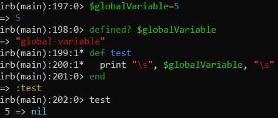
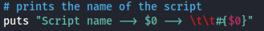
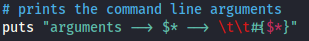
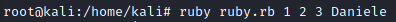
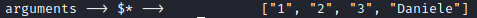
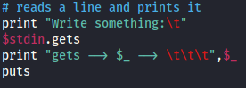
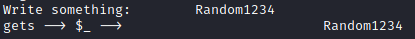

Global variables
global → visible throughout a Ruby program
A global
variable begins with the $ special character. It has a global scope,
meaning that it can be visible and accessible anywhere in the program.
example:Using global variables may be dangerous and it is strongly
discouraged; they can be changed anywhere in the program
pre-defined global variables• $0 : name of the script being executed

◇ executed
• $* : array of command line arguments

◇ executed

• $_ : last string read by gets

◇ executed
• others see the
referencesPredefined Global Variables:https://ruby-doc.org/core-3.0.0/doc/globals_rdoc.html